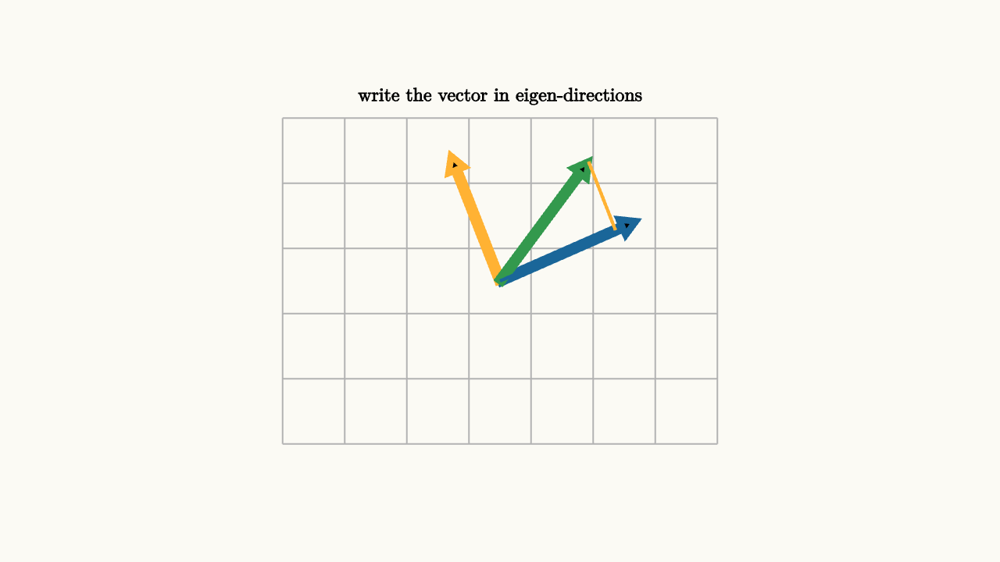

Diagonalization Turns Repetition Into Scaling
Repeated matrix multiplication can be hard to see. A vector moves, then moves again, then moves again. After ten or a hundred steps, direct computation feels like pushing symbols through a machine.
Diagonalization gives the machine a better coordinate system. If a matrix has enough eigenvectors to form a basis, every vector can be written in eigen-coordinates. In that basis, the matrix simply scales each coordinate.
The key equation is
The columns of $P$ are eigenvectors. The diagonal matrix $D$ holds the eigenvalues. The inverse $P^{-1}$ converts a vector into eigen-coordinates, $D$ scales those coordinates, and $P$ converts back to the standard frame.
It helps to read the equation from right to left:
First $P^{-1}$ asks, "how much of each eigenvector is in this vector?" Then $D$ scales each answer by the corresponding eigenvalue. Then $P$ rebuilds the standard vector from the scaled eigenvector pieces. The matrix $A$ may look mixed in standard coordinates, but it is diagonal in the eigenvector language.

source
background = [0.985, 0.98, 0.955, 1]
camera = Camera(4.6b)
let e1 = [1.25, 0.55, 0]
let e2 = [-0.45, 1.15, 0]
let v = 0.85 * e1 + 0.55 * e2
mesh diagram = block {
. stroke{LIGHT_GRAY, 1.1} LineGrid([-2, 2, 8], [-1.5, 1.5, 6], 1)
. stroke{BLUE, 5} Arrow(start: [0, 0, 0], end: e1)
. stroke{ORANGE, 5} Arrow(start: [0, 0, 0], end: e2)
. stroke{GREEN, 5} Arrow(start: [0, 0, 0], end: v)
. stroke{BLUE, 2.5} Line(start: [0, 0, 0], end: 0.85 * e1)
. stroke{ORANGE, 2.5} Line(start: 0.85 * e1, end: v)
. center{[0, 1.7, 0]} color{BLACK} Text("write the vector in eigen-directions", 0.62)
}The reason diagonalization is useful appears when we square $A$:
The middle $P^{-1}P$ becomes the identity. After $n$ steps,
Powers of a diagonal matrix are easy:
Repetition has become scalar exponentiation.
source
background = [0.985, 0.98, 0.955, 1]
camera = Camera(4.7b)
let e1 = [1.2, 0.45, 0]
let e2 = [-0.4, 1.05, 0]
let VecScene = |step, label| block {
let c1 = 0.72 * (1.35 ^ step)
let c2 = 0.72 * (0.62 ^ step)
let v = c1 * e1 + c2 * e2
. stroke{LIGHT_GRAY, 1.1} LineGrid([-2, 2, 8], [-1.5, 1.5, 6], 1)
. stroke{alpha{0.55} BLUE, 4} Line(start: -1.4 * e1, end: 1.4 * e1)
. stroke{alpha{0.55} ORANGE, 4} Line(start: -1.4 * e2, end: 1.4 * e2)
. stroke{BLUE, 3} Line(start: [0, 0, 0], end: c1 * e1)
. stroke{ORANGE, 3} Line(start: c1 * e1, end: v)
. stroke{GREEN, 5} Arrow(start: [0, 0, 0], end: v)
. center{[0, 1.72, 0]} color{BLACK} Text(label, 0.62)
}
"step zero"
mesh scene = VecScene(step: 0, label: "start with eigen-coordinate pieces")
play Write(0.8)
"one application"
scene = VecScene(step: 1, label: "one coordinate grows, the other shrinks")
play Lerp(1.2)
"several applications"
scene = VecScene(step: 4, label: "repetition becomes powers of eigenvalues")
play Lerp(1.3)
"formula"
scene = block {
. VecScene(step: 4, label: "A^n = P D^n P^{-1}")
. center{[0, -1.78, 0]} color{BLACK} Text("change basis, scale, change back", 0.62)
}
play Fade(0.7)This is why diagonalization appears in systems that evolve over time. A population model may update age groups each year. A Markov chain may update probabilities each step. A differential equation may use a matrix to describe coupled rates of change. When the matrix is diagonalizable, the system can be decomposed into independent modes. Each mode grows or decays by its eigenvalue.
The long-term behavior often comes from the largest eigenvalue in magnitude. If one eigenvalue has $|\lambda|>1$ and another has $|\lambda|<1$, repeated multiplication makes the growing eigen-direction dominate. That is why many repeated processes settle toward a characteristic shape or direction.
Diagonalization also clarifies what can go wrong. Some matrices lack enough eigenvectors to form a basis. Then $P$ cannot be built from independent eigenvectors. The matrix may still have structure, and repeated action requires a more careful form, such as Jordan form or singular value decomposition. The simple scaling story needs a complete eigenbasis.
When diagonalization works, the method is a three-part journey:
1. Convert the vector into eigen-coordinates using $P^{-1}$. 2. Scale each eigen-coordinate using $D$. 3. Convert back using $P$.
For one application, that may feel like extra work. For many applications, it is the whole point. Diagonalization turns a repeated moving picture into a set of independent scaling stories.
A two-dimensional example makes the payoff concrete. Suppose the eigenvalues are $2$ and $\frac12$, and a vector begins as
in the eigenbasis. After one step,
After two steps,
After $n$ steps,
The first mode dominates. The second mode fades. A complicated-looking orbit in standard coordinates may simply be one eigen-coordinate growing while another decays.
This mode language is everywhere. In a vibrating system, eigenvectors are natural shapes of vibration and eigenvalues determine frequencies or growth rates. In a Markov chain, the eigenvalue $1$ often represents the steady distribution, while smaller eigenvalues describe how fast initial conditions fade. In a differential equation, diagonalization separates coupled variables into independent modes.
The final caution is that diagonalization changes the coordinate frame. The original matrix still acts in the original space. We choose a better frame because the action becomes easier to describe there. The vector moves in the same way; our coordinates become smarter.